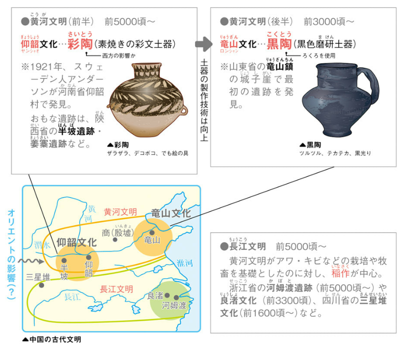
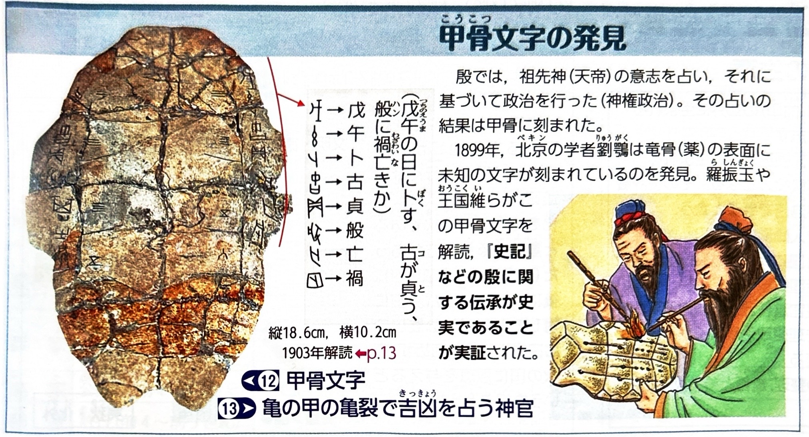
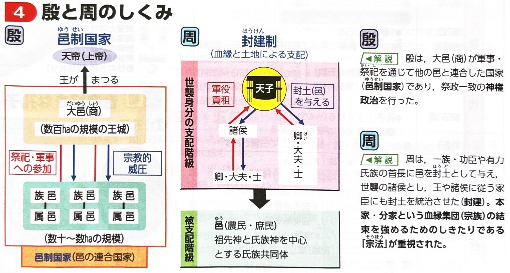
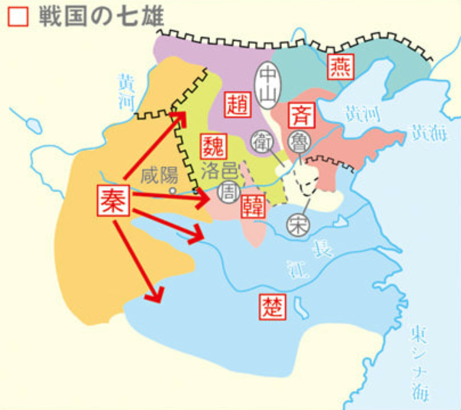
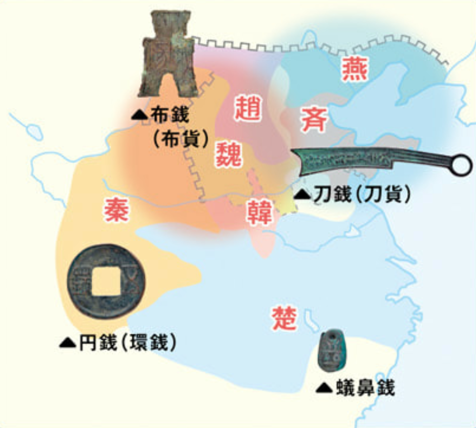
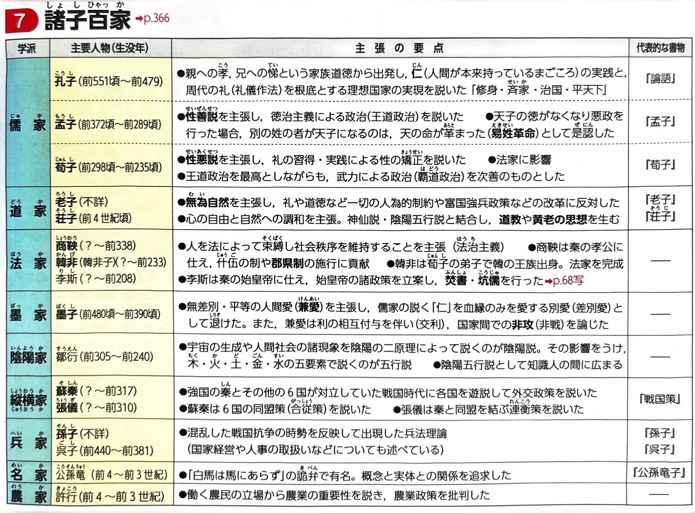
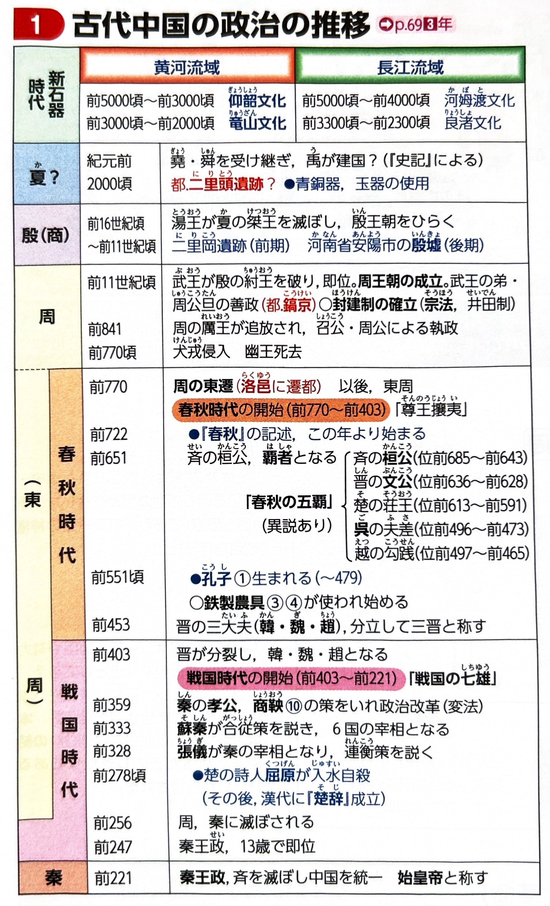

中国史①（殷・周・春秋戦国）
中国の歴史の舞台となるのは、大きく分けて北の黄河流域と南の長江（揚子江）流域です。古代の中国では、この2つの大河の周辺でそれぞれ独自の文明が発達し、やがてそれらが統合されて広大な国家が形成されていきました。
1. 中国の古代文明と国家の形成
石器時代から青銅器時代にかけて、農耕を基盤とした文化が各地で誕生しました。
| 文明・文化 | 時期 | 特徴と代表的な土器・遺跡 |
|---|---|---|
| 黄河文明（前半） 仰韶（ぎょうしょう）文化 |
前5000年頃〜 | 黄河中流域で発達。アワやキビなどの畑作や牧畜が基礎。 特徴的な土器：幾何学文様が描かれた彩陶（素焼きの彩文土器）。 おもな遺跡：半坡（はんぱ）遺跡など。 |
| 黄河文明（後半） 竜山（りゅうざん）文化 |
前3000年頃〜 | 黄河下流域を中心に発達。ろくろを使用し、土器の製作技術が飛躍的に向上した。 特徴的な土器：薄手で黒色の黒陶（黒色磨研土器）や、三本足の土器など。 |
| 長江文明 | 前5000年頃〜 | 黄河文明に対し、高温多湿な環境を活かした稲作が中心であったことが最大の特徴。 おもな遺跡・文化：河姆渡（かぼと）遺跡、良渚（りょうしょ）文化など。 |
| その他の文明 | - | 四川盆地の三星堆（さんせいたい）文化（特異な青銅製の仮面が出土）や、東北地方の遼河文明（紅山文化）など、黄河・長江以外にも多様な文化が存在した。 |
こうした農耕の発達とともに人口が増加し、血縁を中心とした氏族共同体が集まって、「邑（ゆう）」と呼ばれる城壁で囲まれた都市国家が各地に形成されました。

2. 殷・周の政治と社会
多数の邑（都市国家）を従え、広大な地域を支配する強力な連合体の盟主が登場します。
中国最古の確認されている王朝。自らは「商」と称した。大邑商を盟主とする都市国家の連合体であり、中心となる遺跡は河南省安陽市の殷墟（いんきょ）。
- 神権政治（祭政一致）：王が亀の甲羅や動物の骨を使った占いによって神の意思を聞き、それに基づいて政治や軍事を決定した。
- 甲骨文字：占いの結果を刻んだ文字。これが現在の漢字の原型となった。
- 青銅器：複雑で神秘的な文様を持つ祭祀用の青銅器が作られた。また、王の死に際しては奴隷などを共に葬る大規模な殉葬（じゅんそう）が行われた。
渭水（いすい）流域の鎬京（こうけい）を都として成立。周の武王が、暴君とされた殷の紂王を討ち倒した（牧野の戦い）。
- 封建制度：王が王族や功臣に封土（領地）を与え、世襲の諸侯として地方の統治を任せる制度。王や諸侯の下には、卿・大夫・士（けい・たいふ・し）と呼ばれる世襲の家臣団がいた。
- 宗法（そうほう）：周の封建制度は、ヨーロッパのような主君と家臣の「契約」に基づくものではなく、本家と分家の関係という血縁集団（氏族・宗族）の秩序に基づくものであった。


3. 春秋・戦国時代の社会変容（激動の時代）
周王の権威が衰え、諸侯が自立して領土を奪い合う「下剋上」の乱世となりますが、一方で社会や経済は大きく飛躍しました。
異民族（犬戎）の侵入により鎬京を追われた周が、東の洛邑（らくゆう）へ遷都して始まる（これ以降を東周とよぶ）。
有力な諸侯は「覇者」（春秋の五覇：斉の桓公、晋の文公など）とよばれ、「尊王攘夷」（名目上の周王の権威を尊重し、異民族を打ち払う）をスローガンに掲げて覇権を争った。
大国であった「晋」が、家臣の下剋上によって韓・魏・趙の3国に分裂した出来事を機に戦国時代が始まる。各国はもはや周王の権威を無視して自ら「王」を称し、生き残りをかけて実力主義による富国強兵に努めた。
生き残った7つの強国を戦国の七雄（秦、楚、斉、燕、趙、魏、韓）という。
【社会と経済の大きな変化】
- 農業生産力の飛躍：鉄製農具の普及と、牛耕（牛に犂を引かせる農法）の開始。さらに各国の治水・灌漑事業が進んだことで、農業生産力が飛躍的に向上した。（※青銅器は祭器や武器が中心であり、農具にはあまり使われなかった点に注意）
- 氏族制の崩壊：農業の発展により、大家族（氏族共同体）に頼らなくても農業が営めるようになり、小家族の自立が進んだ。
- 商工業の発達と青銅貨幣：農業生産の余剰が生まれ、商工業が発達。各地で様々な形状の青銅貨幣が流通した。
- 刀銭（刀貨）：小刀の形。主に斉・燕などで使用。
- 布銭（布貨）：農具の形。主に韓・魏・趙などで使用。
- 円銭（環銭）：秦・魏など。 蟻鼻銭（ぎびせん）：楚。


4. 諸子百家（思想の開花）
実力主義の乱世において、各国の君主は有能な人材を求めました。これに応えて登場した様々な思想家や学派を諸子百家といいます。
| 学派 | 主な人物 | 思想の特徴 |
|---|---|---|
| 儒家 | 孔子 | 家族道徳の根本である「仁」（内面の道徳・愛）や「礼」（外面的規範）を強調し、道徳による政治（徳治主義）を説いた。 |
| 孟子 | 人間の本性は善であるという性善説を唱え、徳治主義に基づく王道政治や、君主が不徳であれば天命が改まるという易姓革命を主張した。 | |
| 荀子（じゅんし） | 人間の本性は悪であるという性悪説を唱え、人間は外から規制されるべきだとして「礼治主義」（社会秩序の重視）を説いた。 | |
| 法家 | 商鞅（しょうおう） 韓非、李斯 |
荀子の性悪説を進展させ、君主の定める「法」と信賞必罰による厳格な統治を主張。秦の富国強兵と天下統一に大きく貢献した。 |
| 道家 | 老子、荘子 | 儒家の人為的な道徳を批判し、万物の根源である「道」に従い、あるがままに生きる「無為自然」を説いた。のちの道教の源流となる。 |
| 墨家 | 墨子 | 儒家の家族中心の愛（差別愛）を批判し、普遍的で無差別の愛である「兼愛」と、侵略戦争を否定する「非攻」を唱えた。 |
| 縦横家 | 蘇秦、張儀 | 外交の駆け引きを説く戦略家。蘇秦は強国・秦に6国が同盟して対抗する合従策を、張儀は秦と各国が個別に同盟を結ぶ連衡策を説いた。 |

